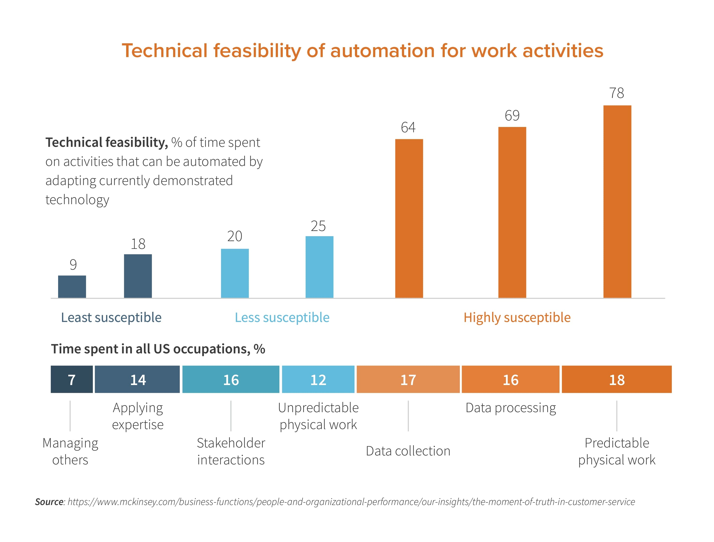

Introduction:
Artificial Intelligence (AI) is transforming several industries, automating the tasks previously performed by humans. From production to client based services, AI is changing the workforce but will it eventually replace human labor?
AI's Impact Across Different Industries
| Industry | AI Impact |
|---|---|
| Manufacturing | Automation of assembly lines |
| Customer Service | AI powered chatbots |
| Healthcare | AI powered diagnosis |
| Entertainment | AI generated content |
The Following Video Explains Further:
Automation Chart:
